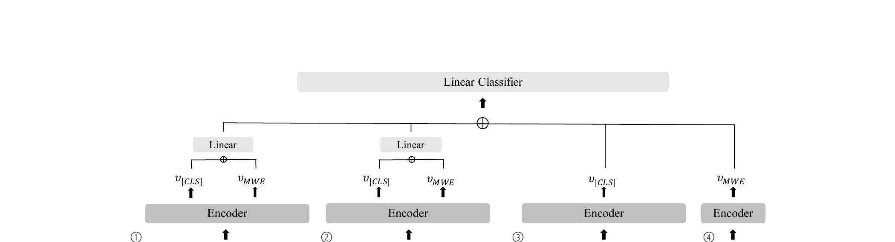

문장 간(inter-sentence) 및 문장 내(inner-sentence) 맥락을 모두 활용하는 네 가지 특징을 계산하여, 두 명사 복합어와 같은 다중 단어 표현(MWE)이 관용적으로 사용되었는지 아니면 문자적으로 사용되었는지를 판별하는 통합 프레임워크로, 영어, 포르투갈어, 갈리시아어에서 강력한 교차 언어 일반화를 달성합니다.

다중 단어 표현(MWE)은 뛰어난 연어 관계를 가진 두 개 이상의 언어 구성 요소로 이루어진 그룹입니다. MWE는 맥락에 따라 다양한 해석을 허용함으로써 언어의 표현력을 풍부하게 합니다. 예를 들어, wet blanket이라는 표현은 구성적("액체에 적신 천")으로 또는 관용적("분위기를 망치는 사람")으로 해석될 수 있습니다. MWE가 관용적으로 사용되었는지를 감지하는 것은 같은 표현이 맥락에 따라 다른 의미를 가질 수 있기 때문에 어려운 NLP 문제이며, 현재 대부분의 NLP 모델이 구성적 의미 포착에 주로 초점을 맞추고 있어 더욱 도전적입니다.
SemEval-2022 Task 2는 두 명사 복합어를 관용적 사용과 비관용적 사용으로 분류하는 과제로, 두 가지 설정을 제공합니다: 학습 중 한 번도 등장하지 않은 MWE를 평가하는 제로샷 설정과, 학습 시 각 MWE당 관용적 예시 하나와 비관용적 예시 하나를 제공하는 원샷 설정입니다.
핵심 과제: 기존 연구(Tayyar Madabushi et al., 2021)에서 세 문장(이전, 대상, 다음)을 단순히 순서대로 연결하는 것은 관용어 감지에 일반적으로 도움이 되지 않음을 보여주었습니다. 이러한 단순 연결 방식은 입력 시퀀스 길이를 약 3배로 늘려, 인코더가 대상 문장과 주변 맥락을 구분하기 어렵게 만들어 오히려 성능을 저하시킬 수 있습니다. 대상 문장을 강조하면서도 주변 정보를 활용하는 더 정교한 맥락 활용 접근이 필요합니다.
프레임워크는 Transformer 인코더(XLM-RoBERTa base)에서 각각 다른 맥락화 측면을 포착하는 네 가지 특징을 계산합니다. 각 특징은 인코더 마지막 레이어에서 추출한 [CLS] 임베딩(v[CLS])과 MWE 임베딩(vMWE, 대상 MWE를 구성하는 서브워드 표현의 평균)으로부터 유도됩니다. 네 가지 특징을 연결한 후 선형 분류기를 통해 최종 관용적/비관용적 예측을 수행합니다:
설계 핵심: MWE를 반복할 때 원형(사전형)이 아닌 대상 문장에서의 굴절형을 복사하여 사용합니다. 이는 맥락화된 표현과 고립된 표현 사이의 형태론적 일관성을 유지하여 공정한 비교를 가능하게 합니다.
SemEval-2022 Task 2 Subtask A(두 명사 복합어 관용어 감지)에서 영어, 포르투갈어, 갈리시아어 3개 언어를 대상으로 평가하였습니다. 갈리시아어는 학습 데이터에 포함되지 않아 순수한 교차 언어 전이 테스트에 해당합니다. 모델은 XLM-R(base)를 사용하며, 최대 시퀀스 길이 300, AdamW 옵티마이저(lr=3e-5), 배치 크기 16, 10 에폭 학습을 적용했습니다. 모델당 5개의 서로 다른 랜덤 시드로 실행하여 개발 세트 매크로 F1 기준 최적 체크포인트를 선택합니다.
| 모델 / 설정 | 영어 | 포르투갈어 | 갈리시아어 | 전체 |
|---|---|---|---|---|
| 베이스라인 (BERT) - 제로샷 | 70.70 | 68.03 | 50.65 | 65.40 |
| 베이스라인 (XLM-R) - 제로샷 | 72.29 | 65.68 | 46.16 | 63.21 |
| 제안 방법 (제출) - 제로샷 | 76.42 | 72.82 | 62.92 | 72.27 |
| 베이스라인 (BERT) - 원샷 | 88.62 | 86.37 | 81.62 | 86.46 |
| 베이스라인 (XLM-R) - 원샷 | 88.45 | 85.03 | 84.02 | 86.56 |
| 제안 방법 (제출) - 원샷 | 91.59 | 84.57 | 82.87 | 87.50 |
| 제안 방법 (사후평가) - 원샷 | 92.29 | 88.05 | 87.10 | 89.96 |
소거 실험에서는 여섯 가지 변형을 비교하였습니다: (A) 맥락 미사용, (B) 단순 3문장 연결, (C) 세그먼트 임베딩 제거, (D) 시퀀스 끝 MWE 반복 제거, (E) 맥락 전용 특징에서 MWE 복원(마스킹 해제), (F) MWE 전용 특징 제거:
관용적 언어를 이해하는 것은 일상 소통에 만연한 비유적 표현을 NLP 시스템이 올바르게 처리하기 위해 필수적입니다. 이 연구는 다음과 같은 중요한 기여를 합니다: